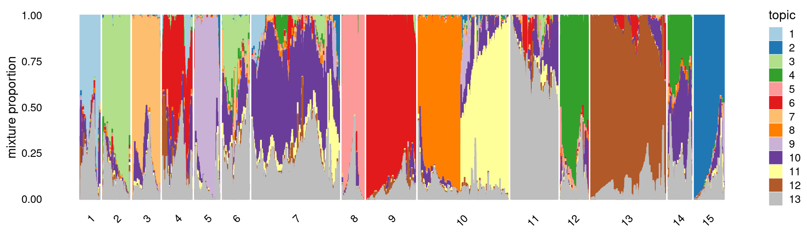
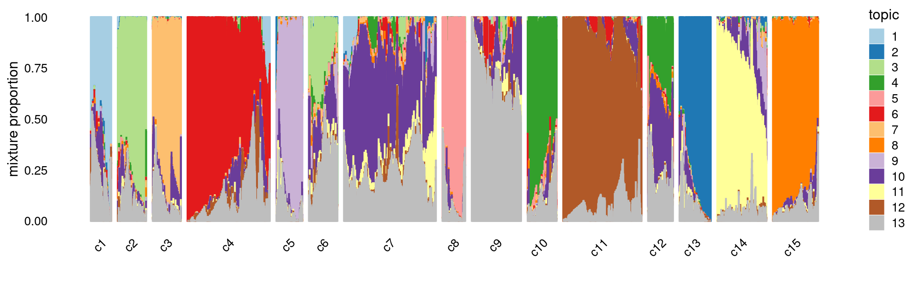

Clustering Cusanovich et al (2018) data using topic proportions with K = 13 topics
Kaixuan Luo
Last updated: 2020-12-01
Checks: 7 0
Knit directory: scATACseq-topics/
This reproducible R Markdown analysis was created with workflowr (version 1.6.2). The Checks tab describes the reproducibility checks that were applied when the results were created. The Past versions tab lists the development history.
Great! Since the R Markdown file has been committed to the Git repository, you know the exact version of the code that produced these results.
Great job! The global environment was empty. Objects defined in the global environment can affect the analysis in your R Markdown file in unknown ways. For reproduciblity it's best to always run the code in an empty environment.
The command set.seed(20200729) was run prior to running the code in the R Markdown file. Setting a seed ensures that any results that rely on randomness, e.g. subsampling or permutations, are reproducible.
Great job! Recording the operating system, R version, and package versions is critical for reproducibility.
Nice! There were no cached chunks for this analysis, so you can be confident that you successfully produced the results during this run.
Great job! Using relative paths to the files within your workflowr project makes it easier to run your code on other machines.
Great! You are using Git for version control. Tracking code development and connecting the code version to the results is critical for reproducibility.
The results in this page were generated with repository version bc7e770. See the Past versions tab to see a history of the changes made to the R Markdown and HTML files.
Note that you need to be careful to ensure that all relevant files for the analysis have been committed to Git prior to generating the results (you can use wflow_publish or wflow_git_commit). workflowr only checks the R Markdown file, but you know if there are other scripts or data files that it depends on. Below is the status of the Git repository when the results were generated:
Ignored files:
Ignored: .Rhistory
Ignored: .Rproj.user/
Untracked files:
Untracked: analysis/clusters_pca_structure_Cusanovich2018.Rmd
Untracked: analysis/motif_analysis_Buenrostro2018_chomVAR_scPeaks.Rmd
Untracked: analysis/process_data_Buenrostro2018_Chen2019.Rmd
Untracked: buenrostro2018.RData
Untracked: scripts/fit_all_models_Buenrostro_2018_chromVar_scPeaks_filtered.sbatch
Unstaged changes:
Modified: analysis/cisTopic_Buenrostro2018_chomVAR_scPeaks.Rmd
Modified: analysis/plots_Lareau2019_bonemarrow.Rmd
Modified: analysis/process_data_Buenrostro2018.Rmd
Modified: code/motif_analysis.R
Modified: code/plots.R
Modified: scripts/fit_all_models_Buenrostro_2018.sbatch
Note that any generated files, e.g. HTML, png, CSS, etc., are not included in this status report because it is ok for generated content to have uncommitted changes.
These are the previous versions of the repository in which changes were made to the R Markdown (analysis/clusters_Cusanovich2018_k13.Rmd) and HTML (docs/clusters_Cusanovich2018_k13.html) files. If you've configured a remote Git repository (see ?wflow_git_remote), click on the hyperlinks in the table below to view the files as they were in that past version.
| File | Version | Author | Date | Message |
|---|---|---|---|---|
| Rmd | bc7e770 | kevinlkx | 2020-12-01 | update tissue colors |
| html | 6c97fa9 | kevinlkx | 2020-12-01 | Build site. |
| Rmd | ab321de | kevinlkx | 2020-12-01 | refine kmeans clusters and add cell label distributions |
| html | e57dfd4 | kevinlkx | 2020-10-21 | Build site. |
| Rmd | a88649d | kevinlkx | 2020-10-21 | wflow_publish("analysis/clusters_Cusanovich2018_k13.Rmd") |
| Rmd | 137c252 | kevinlkx | 2020-10-21 | set toc = yes |
| html | 4c0ab95 | kevinlkx | 2020-10-21 | Build site. |
| html | 9d31a9f | kevinlkx | 2020-10-21 | Build site. |
| Rmd | c00f12b | kevinlkx | 2020-10-21 | update colors and interpret clusters with tissue labels |
| html | 32ed5ae | kevinlkx | 2020-10-21 | Build site. |
| Rmd | 82292d5 | kevinlkx | 2020-10-21 | update colors and interpret clusters with tissue labels |
| html | b8a48b9 | kevinlkx | 2020-10-20 | Build site. |
| Rmd | a4daf6d | kevinlkx | 2020-10-20 | clustering with k = 13 topics |
| html | ac8ca65 | kevinlkx | 2020-10-20 | Build site. |
| Rmd | 98920ed | kevinlkx | 2020-10-20 | clustering with k = 13 topics |
| html | a38788b | kevinlkx | 2020-10-20 | Build site. |
| Rmd | f8bea96 | kevinlkx | 2020-10-20 | clustering with k = 13 topics |
Here we explore the structure in the Cusanovich et al (2018) ATAC-seq data inferred from the multinomial topic model with \(k = 13\).
Load packages and some functions used in this analysis.
library(Matrix)
library(dplyr)
library(ggplot2)
library(cowplot)
library(fastTopics)
source("code/plots.R")Load the data. The counts are no longer needed at this stage of the analysis.
data.dir <- "/project2/mstephens/kevinluo/scATACseq-topics/data/Cusanovich_2018/processed_data/"
load(file.path(data.dir, "Cusanovich_2018.RData"))
rm(counts)Plot PCs of the topic proportions
We first use PCA to explore the structure inferred from the multinomial topic model with \(k = 13\):
Load the \(k = 13\) Poisson NMF fit.
out.dir <- "/project2/mstephens/kevinluo/scATACseq-topics/output/Cusanovich_2018"
fit <- readRDS(file.path(out.dir, "/fit-Cusanovich2018-scd-ex-k=13.rds"))$fitPlot PCs of the topic proportions.
p.pca1.1 <- pca_plot(poisson2multinom(fit),pcs = 1:2,fill = "none")
p.pca1.2 <- pca_plot(poisson2multinom(fit),pcs = 3:4,fill = "none")
p.pca1.3 <- pca_plot(poisson2multinom(fit),pcs = 5:6,fill = "none")
p.pca1.4 <- pca_plot(poisson2multinom(fit),pcs = 7:8,fill = "none")
p.pca1.5 <- pca_plot(poisson2multinom(fit),pcs = 9:10,fill = "none")
p.pca1.6 <- pca_plot(poisson2multinom(fit),pcs = 11:12,fill = "none")
plot_grid(p.pca1.1,p.pca1.2,p.pca1.3,p.pca1.4,p.pca1.5,p.pca1.6)
| Version | Author | Date |
|---|---|---|
| a38788b | kevinlkx | 2020-10-20 |
Some of the structure is more evident from “hexbin” plots showing the density of the points.
breaks <- c(0,1,5,10,100,Inf)
p.pca2.1 <- pca_hexbin_plot(poisson2multinom(fit), pcs = 1:2, breaks = breaks) + guides(fill = "none")
p.pca2.2 <- pca_hexbin_plot(poisson2multinom(fit), pcs = 3:4, breaks = breaks) + guides(fill = "none")
p.pca2.3 <- pca_hexbin_plot(poisson2multinom(fit), pcs = 5:6, breaks = breaks) + guides(fill = "none")
p.pca2.4 <- pca_hexbin_plot(poisson2multinom(fit), pcs = 7:8, breaks = breaks) + guides(fill = "none")
p.pca2.5 <- pca_hexbin_plot(poisson2multinom(fit), pcs = 9:10, breaks = breaks) + guides(fill = "none")
p.pca2.6 <- pca_hexbin_plot(poisson2multinom(fit), pcs = 11:12, breaks = breaks) + guides(fill = "none")
plot_grid(p.pca2.1,p.pca2.2,p.pca2.3,p.pca2.4,p.pca2.5,p.pca2.6)
| Version | Author | Date |
|---|---|---|
| a38788b | kevinlkx | 2020-10-20 |
Layer the tissue and cell labels onto the PC plots
Next, we layer the tissue and cell labels onto the PC plots.
PCs 1 and 2:
p.pca3.1 <- labeled_pca_plot(fit,1:2,samples$tissue,font_size = 7,
legend_label = "tissue")
p.pca3.2 <- labeled_pca_plot(fit,1:2,samples$cell_label,font_size = 7,
legend_label = "cell_label")
plot_grid(p.pca3.1,p.pca3.2,rel_widths = c(8,11))
| Version | Author | Date |
|---|---|---|
| a38788b | kevinlkx | 2020-10-20 |
PCs 3 and 4:
p.pca3.3 <- labeled_pca_plot(fit,3:4,samples$tissue,font_size = 7,
legend_label = "tissue")
p.pca3.4 <- labeled_pca_plot(fit,3:4,samples$cell_label,font_size = 7,
legend_label = "cell_label")
plot_grid(p.pca3.3,p.pca3.4,rel_widths = c(8,11))
| Version | Author | Date |
|---|---|---|
| a38788b | kevinlkx | 2020-10-20 |
PCs 5 and 6:
p.pca3.5 <- labeled_pca_plot(fit,5:6,samples$tissue,font_size = 7,
legend_label = "tissue")
p.pca3.6 <- labeled_pca_plot(fit,5:6,samples$cell_label,font_size = 7,
legend_label = "cell_label")
plot_grid(p.pca3.5,p.pca3.6,rel_widths = c(8,11))
| Version | Author | Date |
|---|---|---|
| a38788b | kevinlkx | 2020-10-20 |
PCs 7 and 8:
p.pca3.7 <- labeled_pca_plot(fit,7:8,samples$tissue,font_size = 7,
legend_label = "tissue")
p.pca3.8 <- labeled_pca_plot(fit,7:8,samples$cell_label,font_size = 7,
legend_label = "cell_label")
plot_grid(p.pca3.7,p.pca3.8,rel_widths = c(8,11))
| Version | Author | Date |
|---|---|---|
| a38788b | kevinlkx | 2020-10-20 |
PCs 9 and 10:
p.pca3.9 <- labeled_pca_plot(fit,9:10,samples$tissue,font_size = 7,
legend_label = "tissue")
p.pca3.10 <- labeled_pca_plot(fit,9:10,samples$cell_label,font_size = 7,
legend_label = "cell_label")
plot_grid(p.pca3.9,p.pca3.10,rel_widths = c(8,11))
| Version | Author | Date |
|---|---|---|
| a38788b | kevinlkx | 2020-10-20 |
PCs 11 and 12:
p.pca3.11 <- labeled_pca_plot(fit,11:12,samples$tissue,font_size = 7,
legend_label = "tissue")
p.pca3.12 <- labeled_pca_plot(fit,11:12,samples$cell_label,font_size = 7,
legend_label = "cell_label")
plot_grid(p.pca3.11,p.pca3.12,rel_widths = c(8,11))
| Version | Author | Date |
|---|---|---|
| a38788b | kevinlkx | 2020-10-20 |
Visualize by structure plot grouped by tissues
set.seed(10)
colors_topics <- c("#a6cee3","#1f78b4","#b2df8a","#33a02c","#fb9a99","#e31a1c",
"#fdbf6f","#ff7f00","#cab2d6","#6a3d9a","#ffff99","#b15928",
"gray")
rows <- sample(nrow(fit$L),4000)
samples$tissue <- as.factor(samples$tissue)
p.structure.1 <- structure_plot(select(poisson2multinom(fit),loadings = rows),
grouping = samples[rows, "tissue"],n = Inf,gap = 40,
perplexity = 50,topics = 1:13,colors = colors_topics,
num_threads = 4,verbose = FALSE)
# Perplexity automatically changed to 42 because original setting of 50 was too large for the number of samples (132)
# Perplexity automatically changed to 40 because original setting of 50 was too large for the number of samples (124)
print(p.structure.1)
| Version | Author | Date |
|---|---|---|
| 6c97fa9 | kevinlkx | 2020-12-01 |
k-means clustering on topic proportions
Define clusters using k-means, and then create structure plot based on the clusters from k-means.
Define clusters using k-means with 15 clusters:
set.seed(10)
clusters.15 <- factor(kmeans(poisson2multinom(fit)$L,centers = 15)$cluster)
print(table(clusters.15))
# clusters.15
# 1 2 3 4 5 6 7 8 9 10 11 12 13
# 2740 3868 3775 3879 3645 3651 12037 2955 6045 12026 6068 3582 9319
# 14 15
# 3411 4172Structure plot based on 15 clusters
colors_topics <- c("#a6cee3","#1f78b4","#b2df8a","#33a02c","#fb9a99","#e31a1c",
"#fdbf6f","#ff7f00","#cab2d6","#6a3d9a","#ffff99","#b15928",
"gray")
rows <- sample(nrow(fit$L),4000)
p.structure.kmeans.15 <- structure_plot(select(poisson2multinom(fit),loadings = rows),
grouping = clusters.15[rows],n = Inf,gap = 20,
perplexity = 50,topics = 1:13,colors = colors_topics,
num_threads = 4,verbose = FALSE)
# Perplexity automatically changed to 42 because original setting of 50 was too large for the number of samples (130)
# Perplexity automatically changed to 46 because original setting of 50 was too large for the number of samples (144)
print(p.structure.kmeans.15)
Refine k-means clusters: - Split cluster 10 into two clusters. - (maybe also merge cluster 4 and 9)
set.seed(10)
clusters.refined <- as.numeric(clusters.15)
idx_cluster10 <- which(clusters.15 == 10)
cluster10.refined <- kmeans(poisson2multinom(fit)$L[idx_cluster10, ],centers = 2)$cluster+15
clusters.refined[idx_cluster10] <- cluster10.refined
clusters.refined <- factor(clusters.refined, labels = paste0("c", c(1:length(unique(clusters.refined)))))
print(table(clusters.refined))
samples$cluster_kmeans <- clusters.refined
# clusters.refined
# c1 c2 c3 c4 c5 c6 c7 c8 c9 c10 c11 c12 c13
# 2740 3868 3775 3879 3645 3651 12037 2955 6045 6068 3582 9319 3411
# c14 c15 c16
# 4172 6423 5603Structure plot based on refined clusters
colors_topics <- c("#a6cee3","#1f78b4","#b2df8a","#33a02c","#fb9a99","#e31a1c",
"#fdbf6f","#ff7f00","#cab2d6","#6a3d9a","#ffff99","#b15928",
"gray")
rows <- sample(nrow(fit$L),4000)
p.structure.kmeans.refined <- structure_plot(select(poisson2multinom(fit),loadings = rows),
grouping = clusters.refined[rows],n = Inf,gap = 40,
perplexity = 50,topics = 1:13,colors = colors_topics,
num_threads = 4,verbose = FALSE)
# Perplexity automatically changed to 41 because original setting of 50 was too large for the number of samples (129)
# Perplexity automatically changed to 46 because original setting of 50 was too large for the number of samples (144)
print(p.structure.kmeans.refined)
| Version | Author | Date |
|---|---|---|
| 6c97fa9 | kevinlkx | 2020-12-01 |
Group samples by k-means clusters first, then by tissue labels:
p.structure.kmeans.refined <- structure_plot(select(poisson2multinom(fit),loadings = rows),
grouping = clusters.refined[rows],
rows = order(samples[rows, "tissue"]), # samples are grouped by clusters first, then by tissue labels
n = Inf,gap = 40,
perplexity = 50,topics = 1:13,colors = colors_topics,
num_threads = 4,verbose = FALSE)
print(p.structure.kmeans.refined)
| Version | Author | Date |
|---|---|---|
| 6c97fa9 | kevinlkx | 2020-12-01 |
The clusters defined by k-means on topic proportions reasonably identify the clusters shown in the PCA hexbin plots (below).
p.pca.4.1 <- labeled_pca_plot(fit,1:2,samples$cluster_kmeans,font_size = 7,
legend_label = "cluster_kmeans")
p.pca.4.2 <- labeled_pca_plot(fit,3:4,samples$cluster_kmeans,font_size = 7,
legend_label = "cluster_kmeans")
p.pca.4.3 <- labeled_pca_plot(fit,5:6,samples$cluster_kmeans,font_size = 7,
legend_label = "cluster_kmeans")
p.pca.4.4 <- labeled_pca_plot(fit,7:8,samples$cluster_kmeans,font_size = 7,
legend_label = "cluster_kmeans")
p.pca.4.5 <- labeled_pca_plot(fit,9:10,samples$cluster_kmeans,font_size = 7,
legend_label = "cluster_kmeans")
p.pca.4.6 <- labeled_pca_plot(fit,11:12,samples$cluster_kmeans,font_size = 7,
legend_label = "cluster_kmeans")
plot_grid(p.pca.4.1,p.pca.4.2,p.pca.4.3,p.pca.4.4,p.pca.4.5,p.pca.4.6)
plot_grid(p.pca2.1,p.pca2.2,p.pca2.3,p.pca2.4,p.pca2.5,p.pca2.6)
We then label the cells in each cluster with the known tissue labels.
Tissues:
samples$tissue <- as.factor(samples$tissue)
cat(length(levels(samples$tissue)), "tissues. \n")
table(samples$tissue)
colors_tissues <- c("darkblue", "darkgray", "red", "springgreen", "brown", "purple", "skyblue", "black",
"darkgreen", "plum", "yellow", "orange", "lightgray")
# 13 tissues.
#
# BoneMarrow Cerebellum Heart Kidney
# 8403 2278 7650 6431
# LargeIntestine Liver Lung PreFrontalCortex
# 7086 6167 9996 5959
# SmallIntestine Spleen Testes Thymus
# 4077 4020 2723 7617
# WholeBrain
# 8766Plot the distribution of tissues by cluster.
Stacked barplot for the counts of tissues by clusters:
library(plyr);library(dplyr)
# ------------------------------------------------------------------------------
# You have loaded plyr after dplyr - this is likely to cause problems.
# If you need functions from both plyr and dplyr, please load plyr first, then dplyr:
# library(plyr); library(dplyr)
# ------------------------------------------------------------------------------
#
# Attaching package: 'plyr'
# The following objects are masked from 'package:dplyr':
#
# arrange, count, desc, failwith, id, mutate, rename, summarise,
# summarize
library(RColorBrewer)
freq_cluster_tissue <- count(samples, vars=c("cluster_kmeans","tissue"))
# stacked barplot for the counts of tissues by clusters
p.barplot.1 <- ggplot(freq_cluster_tissue, aes(fill=tissue, y=freq, x=cluster_kmeans)) +
geom_bar(position="stack", stat="identity") +
theme_classic() + xlab("Cluster") + ylab("Number of cells") +
scale_fill_manual(values = colors_tissues) +
guides(fill=guide_legend(ncol=2)) +
theme(
legend.title = element_text(size = 10),
legend.text = element_text(size = 8)
)
print(p.barplot.1)
Percent stacked barplot for the counts of tissues by clusters:
p.barplot.2 <- ggplot(freq_cluster_tissue, aes(fill=tissue, y=freq, x=cluster_kmeans)) +
geom_bar(position="fill", stat="identity") +
theme_classic() + xlab("Cluster") + ylab("Proportion of cells") +
scale_fill_manual(values = colors_tissues) +
guides(fill=guide_legend(ncol=2)) +
theme(
legend.title = element_text(size = 10),
legend.text = element_text(size = 8)
)
print(p.barplot.2)
- We can see a few clusters are tissue specific:
- cluster c3 is heart specific;
- cluster c8 is kidney specific;
- cluster c16 is liver specific;
- cluster c1 is primarily bone marrow;
- cluster c12 is primarily thymus.
Some clusters are combinations of related tissues: - cluster c9 is half lung and half spleen; - cluster c5 and c15 are mainly from pre-frontal cortex, whole brain (and cerebellum) -- all neuron related. - cluster c14 is also from whole brain and cerebellum. - cluster c11 is mainly from Kidney, LargeIntestine, and Lung.
Some clusters are more heterogeneous mixtures of different tissues: e.g. c2, c6, c7, c12.
freq_table_cluster_tissue <- with(samples,table(tissue,cluster_kmeans))
print(freq_table_cluster_tissue)
# cluster_kmeans
# tissue c1 c2 c3 c4 c5 c6 c7 c8 c9 c10 c11 c12
# BoneMarrow 2455 15 0 1399 0 33 1060 0 276 3063 0 102
# Cerebellum 0 51 0 7 525 44 191 0 30 42 0 0
# Heart 0 1374 3768 126 3 1225 803 5 68 259 3 13
# Kidney 0 757 0 47 0 402 98 2950 48 280 1614 19
# LargeIntestine 0 73 1 107 4 665 2778 0 71 172 441 94
# Liver 0 268 0 97 0 84 31 0 39 50 1 34
# Lung 2 1093 5 1324 2 659 1010 0 2678 465 1521 773
# PreFrontalCortex 0 75 0 84 1169 48 118 0 131 49 0 1
# SmallIntestine 0 22 0 75 0 341 2112 0 9 1457 1 27
# Spleen 43 3 0 427 0 5 24 0 2510 116 0 892
# Testes 240 19 0 1 0 37 2379 0 2 38 0 0
# Thymus 0 2 1 82 0 9 32 0 90 30 1 7363
# WholeBrain 0 116 0 103 1942 99 1401 0 93 47 0 1
# cluster_kmeans
# tissue c13 c14 c15 c16
# BoneMarrow 0 0 0 0
# Cerebellum 15 1177 196 0
# Heart 3 0 0 0
# Kidney 215 0 0 1
# LargeIntestine 2680 0 0 0
# Liver 4 1 0 5558
# Lung 434 2 2 26
# PreFrontalCortex 19 4 4261 0
# SmallIntestine 18 0 0 15
# Spleen 0 0 0 0
# Testes 4 0 0 3
# Thymus 7 0 0 0
# WholeBrain 12 2988 1964 0Plot the distribution of cell labels by cluster.
Stacked barplot for the counts of cell labels by clusters:
freq_cluster_celllabel <- count(samples, vars=c("cluster_kmeans","cell_label"))
colors_celllabels <- colorRampPalette(brewer.pal(12, "Set3"))(40)
# stacked barplot for the counts of tissues by clusters
p.barplot.3 <- ggplot(freq_cluster_celllabel, aes(fill=cell_label, y=freq, x=cluster_kmeans)) +
geom_bar(position="stack", stat="identity") +
theme_classic() + xlab("Cluster") + ylab("Number of cells") +
scale_fill_manual(values = colors_celllabels) +
guides(fill=guide_legend(ncol=3)) +
theme(
legend.title = element_text(size = 9),
legend.text = element_text(size = 7)
)
print(p.barplot.3)
| Version | Author | Date |
|---|---|---|
| 6c97fa9 | kevinlkx | 2020-12-01 |
Percent stacked barplot for the counts of tissues by clusters:
p.barplot.4 <- ggplot(freq_cluster_celllabel, aes(fill=cell_label, y=freq, x=cluster_kmeans)) +
geom_bar(position="fill", stat="identity") +
theme_classic() + xlab("Cluster") + ylab("Proportion of cells") +
scale_fill_manual(values = colors_celllabels) +
guides(fill=guide_legend(ncol=3)) +
theme(
legend.title = element_text(size = 9),
legend.text = element_text(size = 7)
)
print(p.barplot.4)
| Version | Author | Date |
|---|---|---|
| 6c97fa9 | kevinlkx | 2020-12-01 |
freq_table_cluster_celllabel <- with(samples,table(cell_label,cluster_kmeans))
print(freq_table_cluster_celllabel)
# cluster_kmeans
# cell_label c1 c2 c3 c4 c5 c6 c7 c8 c9 c10
# Activated B cells 0 0 0 146 0 0 0 0 331 23
# Alveolar macrophages 0 0 0 322 0 2 16 0 185 34
# Astrocytes 0 0 0 0 1574 11 58 0 0 20
# B cells 0 0 0 470 0 3 648 0 4616 34
# Cardiomyocytes 0 15 3773 1 0 42 169 0 0 76
# Cerebellar granule cells 0 0 0 9 0 3 306 0 0 19
# Collecting duct 0 0 0 0 0 10 0 0 0 5
# Collisions 6 2 0 296 423 15 166 0 44 64
# DCT/CD 0 0 0 0 0 1 0 1 0 6
# Dendritic cells 1 0 0 416 0 2 12 0 424 102
# Distal convoluted tubule 0 0 0 0 0 0 0 0 0 6
# Endothelial I (glomerular) 0 386 0 0 0 158 0 0 0 8
# Endothelial I cells 0 512 0 0 0 438 1 0 0 1
# Endothelial II cells 0 2405 0 15 0 574 7 0 0 15
# Enterocytes 0 0 0 0 1 11 1585 0 0 54
# Erythroblasts 2420 0 0 37 0 0 79 0 0 275
# Ex. neurons CPN 0 0 0 0 0 0 10 0 0 0
# Ex. neurons CThPN 0 0 0 0 0 0 91 0 0 0
# Ex. neurons SCPN 0 0 0 0 0 0 40 0 0 32
# Hematopoietic progenitors 0 0 0 26 0 1 899 0 0 2499
# Hepatocytes 0 0 0 2 0 5 11 0 0 44
# Immature B cells 0 0 0 285 0 0 0 0 68 218
# Inhibitory neurons 0 0 0 3 68 27 754 0 0 8
# Loop of henle 0 1 0 0 0 8 2 1 0 11
# Macrophages 0 0 0 337 0 14 191 0 127 42
# Microglia 0 1 0 159 1 3 31 0 226 1
# Monocytes 69 0 0 1010 0 1 50 0 9 32
# NK cells 0 0 0 231 0 1 2 0 0 16
# Oligodendrocytes 0 0 0 1 1506 1 30 0 0 17
# Podocytes 0 369 0 0 0 113 0 0 0 16
# Proximal tubule 0 1 0 1 0 16 33 2361 0 132
# Proximal tubule S3 0 0 0 0 0 0 2 592 0 0
# Purkinje cells 0 0 0 0 1 2 50 0 0 0
# Regulatory T cells 3 0 0 17 0 1 7 0 0 4
# SOM+ Interneurons 0 0 0 0 7 8 66 0 0 5
# Sperm 240 0 0 0 0 1 1814 0 0 32
# T cells 1 1 0 35 1 7 104 0 0 50
# Type I pneumocytes 0 0 0 1 0 3 0 0 0 27
# Type II pneumocytes 0 8 0 0 0 14 0 0 0 1
# Unknown 0 167 2 59 63 2155 4803 0 15 2139
# cluster_kmeans
# cell_label c11 c12 c13 c14 c15 c16
# Activated B cells 0 0 0 0 0 0
# Alveolar macrophages 0 0 0 0 0 0
# Astrocytes 0 0 0 0 3 0
# B cells 0 0 1 0 0 0
# Cardiomyocytes 0 0 0 0 0 0
# Cerebellar granule cells 0 0 0 3762 0 0
# Collecting duct 124 0 25 0 0 0
# Collisions 0 11 8 97 86 0
# DCT/CD 441 0 57 0 0 0
# Dendritic cells 0 0 1 0 0 0
# Distal convoluted tubule 301 0 12 0 0 0
# Endothelial I (glomerular) 0 0 0 0 0 0
# Endothelial I cells 0 0 0 0 0 0
# Endothelial II cells 0 1 1 1 0 0
# Enterocytes 442 0 2690 0 0 0
# Erythroblasts 0 0 0 0 0 0
# Ex. neurons CPN 0 0 0 0 1822 0
# Ex. neurons CThPN 0 0 0 0 1449 0
# Ex. neurons SCPN 0 0 0 0 1394 0
# Hematopoietic progenitors 0 0 0 0 0 0
# Hepatocytes 0 0 0 0 0 5602
# Immature B cells 0 0 0 0 0 0
# Inhibitory neurons 0 0 0 3 965 0
# Loop of henle 718 0 74 0 0 0
# Macrophages 0 0 0 0 0 0
# Microglia 0 0 0 0 0 0
# Monocytes 0 2 0 0 0 0
# NK cells 0 71 0 0 0 0
# Oligodendrocytes 0 0 0 0 3 0
# Podocytes 0 0 0 0 0 0
# Proximal tubule 7 0 19 0 0 0
# Proximal tubule S3 0 0 0 0 0 0
# Purkinje cells 0 0 0 262 5 0
# Regulatory T cells 0 475 0 0 0 0
# SOM+ Interneurons 0 0 0 1 466 0
# Sperm 0 0 2 0 0 0
# T cells 0 8753 2 0 0 0
# Type I pneumocytes 1415 6 170 0 0 0
# Type II pneumocytes 66 0 68 0 0 0
# Unknown 68 0 281 46 230 1Save the clustering results to an RDS file
saveRDS(samples, "output/clustering-Cusanovich2018.rds")
sessionInfo()
# R version 3.6.1 (2019-07-05)
# Platform: x86_64-pc-linux-gnu (64-bit)
# Running under: Scientific Linux 7.4 (Nitrogen)
#
# Matrix products: default
# BLAS/LAPACK: /software/openblas-0.2.19-el7-x86_64/lib/libopenblas_haswellp-r0.2.19.so
#
# locale:
# [1] LC_CTYPE=en_US.UTF-8 LC_NUMERIC=C
# [3] LC_TIME=en_US.UTF-8 LC_COLLATE=en_US.UTF-8
# [5] LC_MONETARY=en_US.UTF-8 LC_MESSAGES=en_US.UTF-8
# [7] LC_PAPER=en_US.UTF-8 LC_NAME=C
# [9] LC_ADDRESS=C LC_TELEPHONE=C
# [11] LC_MEASUREMENT=en_US.UTF-8 LC_IDENTIFICATION=C
#
# attached base packages:
# [1] stats graphics grDevices utils datasets methods base
#
# other attached packages:
# [1] RColorBrewer_1.1-2 plyr_1.8.6 fastTopics_0.3-180 cowplot_1.1.0
# [5] ggplot2_3.3.2 dplyr_1.0.2 Matrix_1.2-18 workflowr_1.6.2
#
# loaded via a namespace (and not attached):
# [1] ggrepel_0.8.2 Rcpp_1.0.5 lattice_0.20-41 tidyr_1.1.2
# [5] prettyunits_1.1.1 rprojroot_1.3-2 digest_0.6.27 R6_2.5.0
# [9] backports_1.2.0 MatrixModels_0.4-1 evaluate_0.14 coda_0.19-3
# [13] httr_1.4.2 pillar_1.4.7 rlang_0.4.8 progress_1.2.2
# [17] lazyeval_0.2.2 data.table_1.13.2 irlba_2.3.3 SparseM_1.77
# [21] whisker_0.4 hexbin_1.28.1 rmarkdown_2.5 labeling_0.4.2
# [25] Rtsne_0.15 stringr_1.4.0 htmlwidgets_1.5.2 munsell_0.5.0
# [29] compiler_3.6.1 httpuv_1.5.4 xfun_0.19 pkgconfig_2.0.3
# [33] mcmc_0.9-7 htmltools_0.5.0 tidyselect_1.1.0 tibble_3.0.4
# [37] quadprog_1.5-7 viridisLite_0.3.0 crayon_1.3.4 withr_2.3.0
# [41] later_1.1.0.1 MASS_7.3-53 grid_3.6.1 jsonlite_1.6
# [45] gtable_0.3.0 lifecycle_0.2.0 git2r_0.27.1 magrittr_1.5
# [49] scales_1.1.1 RcppParallel_5.0.2 stringi_1.5.3 farver_2.0.3
# [53] fs_1.3.1 promises_1.1.1 ellipsis_0.3.1 generics_0.0.2
# [57] vctrs_0.3.5 tools_3.6.1 glue_1.4.2 purrr_0.3.4
# [61] hms_0.5.3 yaml_2.2.0 colorspace_2.0-0 plotly_4.9.0
# [65] knitr_1.30 quantreg_5.41 MCMCpack_1.4-4